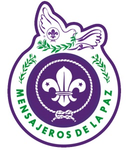

¿Cómo puedo hacer este Proyecto en mi Comunidad?
◄ Volver ≡
Usted
puede trabajar este proyecto con su patrulla, unidad, grupo, distrito,
región, o incluso la Asociación de Scouts de Venezuela (ASV). Cada país
trabajará de diferentes maneras.
Póngase en contacto con el Comité Organizador de Arboles Para El Mundo (COAPEM) para más
información de cómo se organiza su país.
Cada país tiene un Equipo Nacional (EN) que organizará cómo llevar el proyecto a cabo en su país, si
no, el COAPEM se pondrá en contacto directo con usted.
 Después de tener la información básica, se reunirá con su grupo o unidad, y organizar dónde plantar los árboles. El EN O COAPEM le dará los documentos necesarios
Después de tener la información básica, se reunirá con su grupo o unidad, y organizar dónde plantar los árboles. El EN O COAPEM le dará los documentos necesarios
 Reunirse en el lugar seleccionado y plantar los árboles.
Reunirse en el lugar seleccionado y plantar los árboles.
 Tomar fotos, videos y notas sobre su proyecto y enviarlos al Equipo Nacional con copia al Equipo Regional ... Siéntase libre para compartir en las redes sociales como Facebook.
Tomar fotos, videos y notas sobre su proyecto y enviarlos al Equipo Nacional con copia al Equipo Regional ... Siéntase libre para compartir en las redes sociales como Facebook.